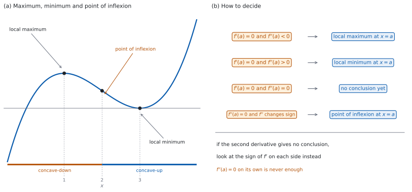
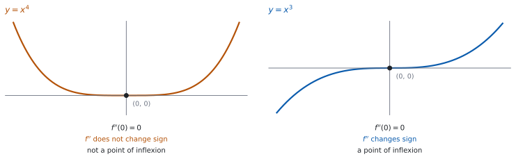

SL 5.8a — Maximum and minimum points, concavity and inflexion（極大・極小・凹凸・変曲点）
- stationary point（停留点）を、\(f'(x) = 0\) を解いて求められる。
- local maximum（極大）と local minimum（極小）を、\(f'\) の符号の変わり方で判定できる。
- 同じ判定を、\(f''\) の符号でもできる。
- concave-up（下に凸）と concave-down（上に凸）の範囲を、\(f''\) の符号から求められる。
- point of inflexion（変曲点）を、\(f''\) が符号を変えるところとして求められる。
- \(f''(a) = 0\) だけでは変曲点と言えないことを、例をあげて説明できる。
- 傾きが \(0\) でない変曲点があることを知っている。
The idea
1. stationary point とその種類
\(f'(a) = 0\) となる点を stationary point（停留点）といいます（SL 5.2）。グラフがそこで水平になります。
SL で扱う関数では、停留点は次の \(3\) 種類のどれかになります（図 1 (a)）。
| 種類 | 英語 | そのまわりでのようす |
|---|---|---|
| 極大 | local maximum | いちばん高い |
| 極小 | local minimum | いちばん低い |
| 傾き \(0\) の変曲点 | point of inflexion with zero gradient | 上がり（下がり）つづける |
「local」は「そのまわりで」という意味です。 グラフ全体でいちばん高いとはかぎりません。
座標を聞かれたら、\(y\) の値も出してください。 \(x\) を求めたら、もとの \(f(x)\) に入れます。
2. 第 1 次導関数の符号で判定する
\(f'(a) = 0\) のとき、\(a\) の左右で \(f'\) の符号を調べます。
| \(a\) の左 | \(a\) の右 | \(x = a\) は |
|---|---|---|
| \(f' > 0\) | \(f' < 0\) | 極大 |
| \(f' < 0\) | \(f' > 0\) | 極小 |
| \(f' > 0\) | \(f' > 0\) | 極大でも極小でもない |
| \(f' < 0\) | \(f' < 0\) | 極大でも極小でもない |
下の \(2\) 行のときは、そこで止めてください。 わかったのは「極大でも極小でもない」ことだけです。傾き \(0\) の変曲点かどうかは、\(f''\) が符号を変えるかどうかで決まります（第 5 節）。
この方法は、\(f''\) が使えないときにも使えます。 \(f''\) が計算しにくいときや、\(f''(a) = 0\) になったときに使います。
答案には、調べた \(x\) の値と \(f'\) の値を書いてください。 「\(f'(-1) = 4 > 0\)、\(f'(1) = -2 < 0\)」のように、値まで書きます（数は書き方の例です）。
3. 第 2 次導関数で判定する
\(f'(a) = 0\) のとき（図 1 (b)）
| \(f''(a)\) | \(x = a\) は |
|---|---|
| \(f''(a) < 0\) | 極大 |
| \(f''(a) > 0\) | 極小 |
| \(f''(a) = 0\) | この方法では決まらない |
符号の向きに気をつけてください。 \(f'' < 0\) が極大です。逆に覚えている人がとても多いところです。\(f'' < 0\) は concave-down、つまり上にふくらんだ形だと思うと、取りちがえにくくなります（第 4 節）。
\(f''(a) = 0\) のときは、第 2 節 にもどります。 \(f'\) の符号を左右で調べれば、極大か、極小か、そのどちらでもないかがわかります。
4. concave-up と concave-down
\(f''(x) > 0\) の範囲を concave-up（下に凸）といいます。 グラフの傾きがだんだん大きくなる範囲です（SL 5.7）。
\(f''(x) < 0\) の範囲を concave-down（上に凸）といいます。 傾きがだんだん小さくなる範囲です。
これは増加・減少とは別の話です。 concave-up でも下がりつづけることがありますし、concave-down でも上がりつづけることがあります。
答えは区間で書きます。 「\(x > 2\) で concave-up」のように書きます。
5. point of inflexion
point of inflexion（変曲点）は、concave-up と concave-down が入れかわる点です。
\((a,\ f(a))\) が変曲点であるための条件は、次の \(2\) つです。
\[ f''(a) = 0 \quad \text{and} \quad f'' \text{ changes sign at } x = a \tag{1}\]
\(f''(a) = 0\) を解いて候補を出し、そのあと符号が変わるかを確かめます。 この \(2\) 段が要ります。
符号が変わったことを、答案に書いてください。 \(a\) の左右で \(f''\) の値を \(1\) つずつ計算して並べるのが、いちばん確かです。
6. \(f''(a) = 0\) だけでは足りない
\(f''(a) = 0\) でも、変曲点でないことがあります。
\(f(x) = x^{4}\) を見ます（図 2）。\(f'(x) = 4x^{3}\)、\(f''(x) = 12x^{2}\) なので \(f''(0) = 0\) です。
ところが \(12x^{2}\) は、\(x\) が正でも負でも正です。 符号が変わらないので、\((0,0)\) は変曲点ではありません。
\(f(x) = x^{3}\) なら変わります。 \(f''(x) = 6x\) は \(x < 0\) で負、\(x > 0\) で正なので、\((0,0)\) は変曲点です。
同じ「\(f''(0) = 0\)」から、ちがう結論が出ます。 だから符号の確認が要ります。
7. 傾きが \(0\) でない変曲点
変曲点は、停留点とはかぎりません。
変曲点の条件は \(f''\) についてのものだけで、\(f'\) については何も言っていません。\(f'(a) \ne 0\) の変曲点もふつうにあります。
| \(f'(a)\) | \(f''\) が \(a\) で符号を変える | \(x = a\) は |
|---|---|---|
| \(f'(a) = 0\) | 変える | 傾き \(0\) の変曲点 |
| \(f'(a) \ne 0\) | 変える | 傾きのある変曲点 |
グラフでは、カーブの向きが入れかわるところです。 上がりながら向きが変わることもあります。
判定と座標の計算は、電卓なしで出します。このページの例題と演習は、すべて手で解ける形です。
文章題（面積・体積・利益などを最大にする問題）は SL 5.8b です。
グラフ画面に \(y = f(x)\) をかき、極大・極小の位置が求めた座標と合っているかを目で確かめます。
\(y = f''(x)\) もいっしょにかくと、符号が変わる場所が見えます。


Why it works
なぜ、\(f'\) の符号が変わると極大や極小になるのでしょうか。 上がってから下がれば、その境目がいちばん高いからです。
\(a\) の左で \(f' > 0\) なら、そこまで \(f\) は増加しています。\(a\) の右で \(f' < 0\) なら、そこから減少します。だから \(f(a)\) は、そのまわりでいちばん大きい値です（SL 5.2）。極小はその逆です。
なぜ、\(f''(a) < 0\) で極大になるのでしょうか。 \(f'\) が減っていく途中で \(0\) を通るからです。
\(f''(a) < 0\) は、\(f'\) の変化率が \(x = a\) で負だということです。\(f'(a) = 0\) なので、\(a\) のすぐ左では \(f'\) の値は \(0\) より大きく、すぐ右では \(0\) より小さくなります。これは 表 2 の \(1\) 行目そのものです。
「\(a\) のまわりの区間で \(f'\) が減少している」とまでは、\(f''(a) < 0\) だけからは言えません。 SL 5.7 の言い方は、区間全体で \(f''\) の符号が決まっているときのものです。
つまり、\(2\) つの判定は別々の事実ではありません。 \(f''\) による判定は、\(f'\) の符号の変わり方を \(1\) 度の計算で調べる近道です。
なぜ、\(f''(a) = 0\) では決まらないのでしょうか。 \(f'\) の減り方・増え方が、そこで止まっているだけだからです。
\(f''(a) = 0\) は「\(f'\) の変化がその瞬間 \(0\)」という意味で、\(f'\) が \(a\) の前後で符号を変えるかどうかは何も言いません。だから、\(f'\) を直接見にいくしかありません。
なぜ、変曲点には符号の変化が要るのでしょうか。 変曲点の意味が「向きが入れかわる点」だからです。
concave-up と concave-down のちがいは \(f''\) の符号です。入れかわるということは、\(f''\) の符号が変わるということです。 \(f''(a) = 0\) は、その途中で通るだけの条件です。
Worked examples
問題文は英語です。意味が理解できなかったら、問題文の下の「日本語訳」を開いてください。解説は日本語です。
この項目は Paper 1 に出ます。 電卓なしで解ける形にしてあります。
例題 1 The function \(f\) is given by \(f(x) = 2x^{3} + 3x^{2} - 12x + 1\). Find the coordinates of the local maximum point and of the local minimum point.
日本語訳
関数 \(f\) は \(f(x) = 2x^{3} + 3x^{2} - 12x + 1\) で与えられます。極大点と極小点の座標を求めなさい。
\(1\) 歩目。 \(f'(x) = 0\) を解きます。
\[ f'(x) = 6x^{2} + 6x - 12 = 6(x + 2)(x - 1) \]
\[ x = -2 \quad \text{or} \quad x = 1 \]
\(2\) 歩目。 \(f''\) で判定します（第 3 節）。
\[ f''(x) = 12x + 6 \]
\(f''(-2) = -24 + 6 = -18 < 0\) なので、\(x = -2\) は極大です。
\(f''(1) = 12 + 6 = 18 > 0\) なので、\(x = 1\) は極小です。
\(3\) 歩目。 \(y\) の値を出します。
\[ f(-2) = -16 + 12 + 24 + 1 = 21 \]
\[ f(1) = 2 + 3 - 12 + 1 = -6 \]
極大点は \((-2, 21)\)、極小点は \((1, -6)\) です。
検算（両側の値で）。 \(f(-3) = -54 + 27 + 36 + 1 = 10\)、\(f(-1) = -2 + 3 + 12 + 1 = 14\) ✓ どちらも \(21\) より小さいので、\((-2, 21)\) がそのまわりでいちばん高い点だと確かめられます。
検算（\(y\) の値）。 \(f(1) = 2 + 3 - 12 + 1 = -6\) ✓ もとの式に入れて出しました。
検算（\(f'\) の符号で）。 \(f'(0) = -12 < 0\) です ✓ \(x = -2\) と \(x = 1\) のあいだで \(f\) が減っているので、左が極大、右が極小と合っています。
検算（因数分解）。 \(6(x+2)(x-1) = 6x^{2} + 6x - 12\) ✓ 展開してもどりました。
\[f'(x) = 6x^{2} + 6x - 12 = 6(x + 2)(x - 1) = 0\] \[x = -2, \qquad x = 1\] \[f''(x) = 12x + 6\] \[f''(-2) = -18 < 0 \quad \text{(maximum)}, \qquad f''(1) = 18 > 0 \quad \text{(minimum)}\] \[(-2,\ 21) \quad \text{and} \quad (1,\ -6)\]
例題 2 The function \(f\) is given by \(f(x) = x^{4} - 4x^{3}\). Find the coordinates of the points of inflexion on the graph of \(f\), and state which of them is a stationary point.
日本語訳
関数 \(f\) は \(f(x) = x^{4} - 4x^{3}\) で与えられます。\(f\) のグラフの変曲点の座標を求め、そのうちどれが停留点かを述べなさい。
\(1\) 歩目。 \(f''(x) = 0\) を解いて、候補を出します。
\[ f'(x) = 4x^{3} - 12x^{2} \]
\[ f''(x) = 12x^{2} - 24x = 12x(x - 2) \]
\[ x = 0 \quad \text{or} \quad x = 2 \]
\(2\) 歩目。 それぞれで符号が変わるかを確かめます（第 5 節）。
\(f''(-1) = 12 + 24 = 36 > 0\)、\(f''(1) = 12 - 24 = -12 < 0\) なので、\(x = 0\) で符号が変わります。
\(f''(1) = -12 < 0\)、\(f''(3) = 108 - 72 = 36 > 0\) なので、\(x = 2\) でも符号が変わります。
\(3\) 歩目。 \(y\) の値を出します。
\[ f(0) = 0, \qquad f(2) = 16 - 32 = -16 \]
変曲点は \((0, 0)\) と \((2, -16)\) です。
\(4\) 歩目。 停留点かどうかを見ます（第 7 節）。
\(f'(0) = 0\) なので \((0,0)\) は停留点です。\(f'(2) = 32 - 48 = -16 \ne 0\) なので、\((2,-16)\) は停留点ではありません。
検算（\(f''\) の形）。 \(12x(x-2)\) は \(2\) 次式で、\(2\) つの根のあいだで負、外で正です ✓ 調べた値と合っています。
検算（符号の並び）。 正・負・正と並んでいるので、符号の変わり目はちょうど \(2\) か所です ✓ \(f''\) が \(2\) 次式であることと合っています。
検算（\(f(2)\)）。 \(2^{4} = 16\)、\(4 \times 2^{3} = 32\) なので \(16 - 32 = -16\) ✓
検算（\(f'(2)\)）。 \(4 \times 8 - 12 \times 4 = 32 - 48 = -16\) ✓ \(0\) ではないので、停留点ではありません。
\[f'(x) = 4x^{3} - 12x^{2}, \qquad f''(x) = 12x^{2} - 24x = 12x(x - 2)\] \[f''(x) = 0 \Rightarrow x = 0, \ x = 2\] \[f''(-1) = 36 > 0, \quad f''(1) = -12 < 0, \quad f''(3) = 36 > 0\] so \(f''\) changes sign at both values \[(0,\ 0) \quad \text{and} \quad (2,\ -16)\] \((0,0)\) is a stationary point since \(f'(0) = 0\); \((2,-16)\) is not, since \(f'(2) = -16\)
例題 3 The function \(f\) is given by \(f(x) = x^{6}\).
(a) Show that \(f'(0) = 0\) and \(f''(0) = 0\).
(b) Explain why \((0,0)\) is not a point of inflexion.
(c) Determine the nature of the stationary point at \((0,0)\).
日本語訳
関数 \(f\) は \(f(x) = x^{6}\) で与えられます。
(a) \(f'(0) = 0\) かつ \(f''(0) = 0\) であることを示しなさい。
(b) \((0,0)\) が変曲点でない理由を説明しなさい。
(c) \((0,0)\) にある停留点の種類を判定しなさい。
(a) \(2\) 回微分して、\(x = 0\) を入れます。
\[ f'(x) = 6x^{5}, \qquad f''(x) = 30x^{4} \]
\[ f'(0) = 0, \qquad f''(0) = 0 \]
(b) Explain なので、英語で理由を書きます。
試験ではこう書く
A point of inflexion needs \(f''\) to change sign there. Here \(f''(x) = 30x^{4}\), which is positive for every \(x \ne 0\), so \(f''\) has the same sign on both sides of \(0\). The graph is concave-up on both sides, so the concavity does not change and \((0,0)\) is not a point of inflexion.
（変曲点であるためには、そこで \(f''\) が符号を変える必要がある。ここでは \(f''(x) = 30x^{4}\) で、\(x \ne 0\) のどの \(x\) でも正なので、\(0\) の左右で符号が同じである。両側とも concave-up なので向きは入れかわらず、\((0,0)\) は変曲点ではない、という意味です。）
(c) \(f''(0) = 0\) なので、\(f'\) の符号で判定します（第 2 節）。
\(f'(-1) = -6 < 0\)、\(f'(1) = 6 > 0\) なので、負から正に変わります。したがって \((0,0)\) は極小点です。
検算（グラフで）。 \(x^{6}\) はどの \(x\) でも \(0\) 以上で、\(x = 0\) でだけ \(0\) です ✓ そこがいちばん低い点です。
検算（\(f''\) の値）。 \(f''(-1) = 30\)、\(f''(1) = 30\) ✓ どちらも正で、符号が変わっていません。
検算（\(x^{3}\) とくらべる）。 \(x^{3}\) なら \(f''(x) = 6x\) で符号が変わり、\((0,0)\) は変曲点になります ✓ 偶数乗と奇数乗でちがいます。
検算（\(f''(0) = 0\) の意味）。 \(f''(0) = 0\) からは、変曲点だとも極小だとも言えません ✓ どちらの場合もあります。
(a) \[f'(x) = 6x^{5}, \qquad f''(x) = 30x^{4}\] \[f'(0) = 0, \qquad f''(0) = 0\]
(b) \(f''(x) = 30x^{4} > 0\) for all \(x \ne 0\), so \(f''\) does not change sign at \(0\)
(c) \[f'(-1) = -6 < 0, \qquad f'(1) = 6 > 0\] sign of \(f'\) changes from negative to positive, so \((0,0)\) is a local minimum point
例題 4 The function \(f\) is given by \(f(x) = e^{x} - x^{2}\).
(a) Find \(f''(x)\).
(b) Find the exact value of \(x\) at which the graph of \(f\) changes from concave-down to concave-up.
日本語訳
関数 \(f\) は \(f(x) = e^{x} - x^{2}\) で与えられます。
(a) \(f''(x)\) を求めなさい。
(b) \(f\) のグラフが concave-down から concave-up に変わる \(x\) の値を、正確な形で求めなさい。
(a) \(2\) 回微分します。
\[ f'(x) = e^{x} - 2x \]
\[ f''(x) = e^{x} - 2 \]
(b) \(f''(x) = 0\) とおきます。
\[ e^{x} - 2 = 0 \]
\[ e^{x} = 2 \]
\[ x = \ln 2 \]
\(x < \ln 2\) では \(e^{x} < 2\) なので \(f''(x) < 0\)（concave-down）、\(x > \ln 2\) では \(f''(x) > 0\)（concave-up）です。
検算（符号の向き）。 \(e^{x}\) は増加する関数なので、\(\ln 2\) より右で \(e^{x} > 2\) です ✓ concave-up に変わる向きで合っています。
検算（\(x = 0\) で）。 \(f''(0) = 1 - 2 = -1 < 0\) です ✓ \(0 < \ln 2\) なので、concave-down 側にあります。
検算（\(x = 1\) で）。 \(f''(1) = e - 2 > 0\) です ✓ \(e > 2\) だからです。\(1 > \ln 2\) なので、concave-up 側にあります。
検算（正確な形）。 答えは \(\ln 2\) で、\(0.693\) と丸めていません ✓ 「exact value」と書かれています。
(a) \[f'(x) = e^{x} - 2x, \qquad f''(x) = e^{x} - 2\]
(b) \[e^{x} - 2 = 0 \Rightarrow x = \ln 2\] \(f'' < 0\) for \(x < \ln 2\) and \(f'' > 0\) for \(x > \ln 2\)
Common errors
停留点には変曲点もあります（第 1 節）。判定が要ります。
\(f''(a) < 0\) が極大です（第 3 節）。ここは毎年まちがえる人がいます。
符号が変わることまで確かめてください（第 6 節）。\(y = x^{4}\) が反例です。
\(y\) の値も出してください（第 1 節）。もとの \(f(x)\) に入れます。
concave-up は傾きが増えることで、\(y\) が増えることではありません（第 4 節）。
\(f'(a) \ne 0\) の変曲点もあります（第 7 節）。
Exercises
各問題に、折りたたみが \(3\) つ付いています。日本語訳、解答例（答案用紙に書くべきこと。英語です。英語の答案例が付くものもあります）、解説（なぜそうなるか。日本語です）。
まず自分で解いて、次に解答例と見くらべてください。解説は、合わなかったときだけ開けば十分です。
1 The function \(f\) is given by \(f(x) = x^{3} - 12x + 1\). Find the coordinates of the local maximum point and of the local minimum point, using the sign of \(f'\) to show which is which.
日本語訳
関数 \(f\) は \(f(x) = x^{3} - 12x + 1\) で与えられます。極大点と極小点の座標を求め、\(f'\) の符号を使ってどちらがどちらかを示しなさい。
\[f'(x) = 3x^{2} - 12 = 3(x - 2)(x + 2) = 0 \Rightarrow x = -2, \ x = 2\]
\[f'(-3) = 15 > 0, \qquad f'(0) = -12 < 0, \qquad f'(3) = 15 > 0\]
\(f'\) changes from positive to negative at \(x = -2\), so \((-2,\ 17)\) is a local maximum point
\(f'\) changes from negative to positive at \(x = 2\), so \((2,\ -15)\) is a local minimum point
\(f'(x) = 0\) を解いてから、\(3\) か所で \(f'\) の符号を調べます（第 2 節）。
検算（\(y\) の値）。 \(f(-2) = -8 + 24 + 1 = 17\)、\(f(2) = 8 - 24 + 1 = -15\) ✓
検算（\(f''\) でも）。 \(f''(x) = 6x\) なので \(f''(-2) = -12 < 0\)、\(f''(2) = 12 > 0\) ✓ 同じ結論になります（第 3 節）。
検算（両側の値で）。 \(f(-3) = -27 + 36 + 1 = 10\)、\(f(-1) = -1 + 12 + 1 = 12\) ✓ どちらも \(17\) より小さいので、\((-2, 17)\) はそのまわりでいちばん高い点です。
2 The function \(f\) is given by \(f(x) = x^{2} - 6x + 4\). Show that the graph of \(f\) has a local minimum point, and find its coordinates.
日本語訳
関数 \(f\) は \(f(x) = x^{2} - 6x + 4\) で与えられます。\(f\) のグラフが極小点をもつことを示し、その座標を求めなさい。
\[f'(x) = 2x - 6 = 0 \Rightarrow x = 3\]
\[f''(x) = 2 > 0 \quad \text{(minimum)}\]
\[(3,\ -5)\]
\(f''\) が定数で正なので、どの停留点も極小です（第 3 節）。
検算（\(y\) の値）。 \(f(3) = 9 - 18 + 4 = -5\) ✓
検算（放物線として）。 \(x^{2}\) の係数が正なので、下に開いていません ✓ 極小があるのは合っています。
検算（変曲点はあるか）。 \(f''(x) = 2\) はどこでも \(0\) になりません ✓ 変曲点はありません。
3 The function \(f\) is given by \(f(x) = x^{3} - 3x^{2} + 4\). Find the coordinates of the point of inflexion on the graph of \(f\).
日本語訳
関数 \(f\) は \(f(x) = x^{3} - 3x^{2} + 4\) で与えられます。\(f\) のグラフの変曲点の座標を求めなさい。
\[f'(x) = 3x^{2} - 6x, \qquad f''(x) = 6x - 6\]
\[f''(x) = 0 \Rightarrow x = 1\]
\[f''(0) = -6 < 0, \qquad f''(2) = 6 > 0\]
so \(f''\) changes sign at \(x = 1\)
\[(1,\ 2)\]
4 The function \(f\) is given by \(f(x) = x^{4} - 2x^{3}\). Find the interval on which the graph of \(f\) is concave-down.
日本語訳
関数 \(f\) は \(f(x) = x^{4} - 2x^{3}\) で与えられます。\(f\) のグラフが concave-down となる区間を求めなさい。
\[f'(x) = 4x^{3} - 6x^{2}, \qquad f''(x) = 12x^{2} - 12x = 12x(x - 1)\]
\[12x(x - 1) < 0\]
\[0 < x < 1\]
concave-down は \(f''(x) < 0\) の範囲です（第 4 節）。因数分解してから符号を見ます。
検算（\(x = \dfrac{1}{2}\) で）。 \(f''\left(\dfrac{1}{2}\right) = 3 - 6 = -3 < 0\) ✓ 求めた区間の中にあります。
検算（外側で）。 \(f''(-1) = 12 + 12 = 24 > 0\)、\(f''(2) = 48 - 24 = 24 > 0\) ✓ どちらも区間の外です。
検算（端で）。 \(f''(0) = 0\)、\(f''(1) = 0\) です ✓ 区間の端で \(f''\) が \(0\) になっています。
5 The function \(f\) is given by \(f(x) = x + \dfrac{4}{x}\), for \(x \ne 0\). Find the coordinates of the stationary points and determine their nature.
日本語訳
関数 \(f\) は \(f(x) = x + \dfrac{4}{x}\)（\(x \ne 0\)）で与えられます。停留点の座標を求め、その種類を判定しなさい。
\[f(x) = x + 4x^{-1}\]
\[f'(x) = 1 - 4x^{-2} = 0 \Rightarrow x^{2} = 4 \Rightarrow x = -2, \ x = 2\]
\[f''(x) = 8x^{-3}\]
\[f''(-2) = -1 < 0 \quad \text{(maximum)}, \qquad f''(2) = 1 > 0 \quad \text{(minimum)}\]
\((-2,\ -4)\) is a local maximum point
\((2,\ 4)\) is a local minimum point
6 The function \(f\) is given by \(f(x) = x^{5}\). Show that \(f''(0) = 0\), and determine whether \((0,0)\) is a point of inflexion.
日本語訳
関数 \(f\) は \(f(x) = x^{5}\) で与えられます。\(f''(0) = 0\) であることを示し、\((0,0)\) が変曲点かどうかを判定しなさい。
\[f'(x) = 5x^{4}, \qquad f''(x) = 20x^{3}\]
\[f''(0) = 0\]
\[f''(-1) = -20 < 0, \qquad f''(1) = 20 > 0\]
\(f''\) changes sign at \(0\), so \((0,0)\) is a point of inflexion
\(20x^{3}\) は奇数乗なので、符号が変わります（第 6 節）。
検算（\(x^{4}\) とくらべる）。 \(f(x) = x^{4}\) なら \(f''(x) = 12x^{2}\) で符号が変わりません ✓ 指数が奇数か偶数かで結果がちがいます。
検算（停留点でもある）。 \(f'(0) = 0\) です ✓ 傾き \(0\) の変曲点です。
検算（\(f''\) の値）。 \(20 \times (-1) = -20\)、\(20 \times 1 = 20\) ✓ 負から正に変わっています。
7 For a function \(f\), the graph of \(f''\) is a straight line which crosses the \(x\)-axis at \(x = 4\), changing from negative to positive. Describe what happens to the graph of \(f\) at \(x = 4\).
日本語訳
ある関数 \(f\) について、\(f''\) のグラフは直線で、\(x = 4\) で \(x\) 軸を負の値から正の値へ横切ります。\(x = 4\) で \(f\) のグラフに何が起こるかを述べなさい。
\(f''\) changes sign at \(x = 4\), so the graph of \(f\) has a point of inflexion there
the graph changes from concave-down to concave-up
\(f''\) の符号が変わるところが変曲点です（第 5 節）。
検算（向き）。 負から正なので、concave-down から concave-up です ✓
検算（停留点かどうか）。 \(f'(4)\) については何も言えません ✓ 傾きのある変曲点かもしれません（第 7 節）。
検算（何が聞かれているか）。 聞かれているのは「何が起こるか」で、座標ではありません ✓ \(f\) の式がないので、\(y\) の値は出せません。
試験ではこう書く
The graph of \(f''\) crosses the \(x\)-axis at \(x = 4\), so \(f''(4) = 0\) and \(f''\) changes sign there, from negative to positive. A change of sign of \(f''\) is exactly what a point of inflexion needs, so the graph of \(f\) has a point of inflexion at \(x = 4\), changing from concave-down to concave-up.
8 A student writes: “\(f''(2) = 0\), so the graph of \(f\) has a point of inflexion at \(x = 2\).” Explain why this reasoning is not enough, and state what else must be checked.
日本語訳
ある生徒が「\(f''(2) = 0\) なので、\(f\) のグラフは \(x = 2\) に変曲点をもつ」と書きました。この理由づけでは足りない理由を説明し、ほかに何を確かめる必要があるかを述べなさい。
\(f''(2) = 0\) does not say that \(f''\) changes sign at \(2\)
you must also check the sign of \(f''\) on each side of \(2\)
\(f''(a) = 0\) は候補を出す条件で、判定ではありません（第 6 節）。
検算（反例）。 \(f(x) = (x-2)^{4}\) とすると \(f''(x) = 12(x-2)^{2}\) で、\(f''(2) = 0\) ですが符号は変わりません ✓ 変曲点ではありません。
検算（何を書けばよいか）。 \(x = 1\) と \(x = 3\) での \(f''\) の値を並べれば足ります ✓
検算（逆は正しいか）。 \(f''(a)\) が計算できる変曲点では、\(f''(a) = 0\) です ✓ この向きは成り立ちます。
試験ではこう書く
A point of inflexion requires \(f''\) to change sign, not just to be zero. The equation \(f''(2) = 0\) only produces a candidate. For example, if \(f(x) = (x - 2)^{4}\) then \(f''(2) = 0\), but \(f''(x) = 12(x - 2)^{2}\) is positive on both sides, so there is no point of inflexion. The student must also check the sign of \(f''\) on each side of \(x = 2\).
9 The function \(f\) is given by \(f(x) = x^{3} - 3x^{2} + 3x\). Show that \(f'(1) = 0\) and \(f''(1) = 0\). Justify, using the sign of \(f'\), that \((1,1)\) is neither a local maximum point nor a local minimum point.
日本語訳
関数 \(f\) は \(f(x) = x^{3} - 3x^{2} + 3x\) で与えられます。\(f'(1) = 0\) かつ \(f''(1) = 0\) であることを示しなさい。また、\(f'\) の符号を使って、\((1,1)\) が極大点でも極小点でもないことを、理由をつけて示しなさい。
\[f'(x) = 3x^{2} - 6x + 3 = 3(x - 1)^{2}, \qquad f''(x) = 6x - 6\]
\[f'(1) = 0, \qquad f''(1) = 0\]
\[f'(0) = 3 > 0, \qquad f'(2) = 3 > 0\]
\(f'\) does not change sign at \(x = 1\), so \((1,1)\) is neither a local maximum nor a local minimum point
\(f''(1) = 0\) なので、\(f''\) による判定は使えません（第 3 節）。\(f'\) の符号を見ます。
検算（\(f'\) の形）。 \(3(x-1)^{2}\) は \(2\) 乗なので、\(x \ne 1\) ではつねに正です ✓ 符号は変わりません。
検算（\(y\) の値）。 \(f(1) = 1 - 3 + 3 = 1\) ✓ 点は \((1,1)\) です。
検算（では何か）。 \(f''\) は \(x = 1\) で符号を変えるので、\((1,1)\) は傾き \(0\) の変曲点です ✓（第 7 節）
試験ではこう書く
Differentiating gives \(f'(x) = 3x^{2} - 6x + 3 = 3(x - 1)^{2}\) and \(f''(x) = 6x - 6\), so \(f'(1) = 0\) and \(f''(1) = 0\). Because \(f'(x) = 3(x-1)^{2}\) is a square, \(f'(x) > 0\) for every \(x \ne 1\): for example \(f'(0) = 3\) and \(f'(2) = 3\). The sign of \(f'\) is the same on both sides of \(x = 1\), so \(f\) is not turning there and \((1,1)\) is neither a local maximum nor a local minimum point.
10 The function \(f\) is given by \(f(x) = e^{x} + e^{-x}\). Show that the graph of \(f\) is concave-up for every value of \(x\).
日本語訳
関数 \(f\) は \(f(x) = e^{x} + e^{-x}\) で与えられます。\(f\) のグラフがすべての \(x\) で concave-up であることを示しなさい。
\[f'(x) = e^{x} - e^{-x}, \qquad f''(x) = e^{x} + e^{-x}\]
\(e^{x} > 0\) and \(e^{-x} > 0\) for every real \(x\), so \(f''(x) > 0\) for every \(x\)
the graph is therefore concave-up everywhere
\(e^{-x}\) の微分では、内側の導関数 \(-1\) をかけます（SL 5.6a）。\(2\) 回で符号がもどります。
検算（\(f''\) がもとにもどる）。 \(f'' = f\) になっています ✓ \(e^{x}\) と \(e^{-x}\) が入れかわりながら、\(2\) 回でもとの形にもどります。
検算（変曲点はあるか）。 \(f''(x) > 0\) なので \(0\) になりません ✓ 変曲点はありません。
検算（\(x = 0\) で）。 \(f''(0) = 1 + 1 = 2 > 0\) ✓ \(f'(0) = 1 - 1 = 0\) なので、\((0, 2)\) は極小点です。